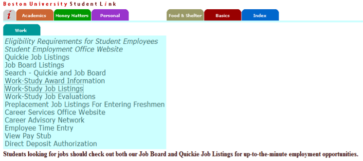
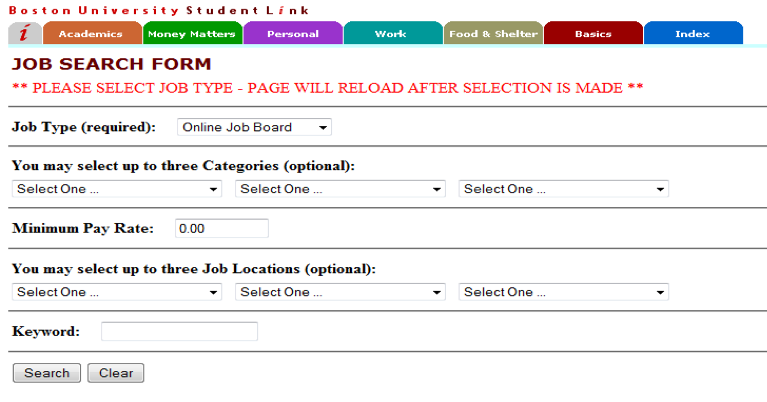
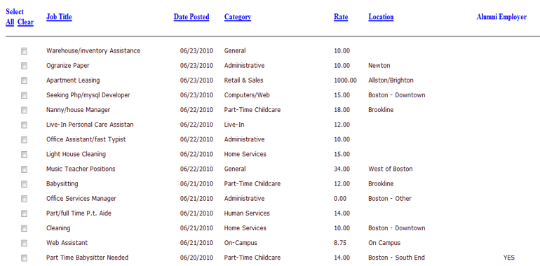
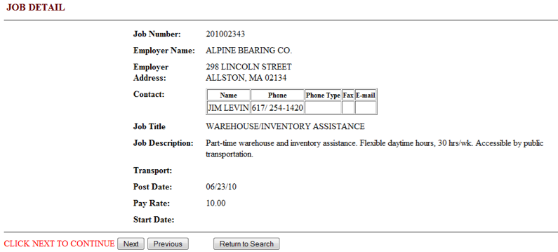

校内工作篇
校内工作篇
美国允许国际学生在校内打工。学校会把一些工作，以及employer的联系方式放在Student Link上。需要在Student Employ Office登记后，与employer取得联系，然后申请工作。一般情况下学校各大食堂都会招收工作人员，大家可以去食堂询问情况，也可以找在食堂工作的学长学姐们推荐进入食堂工作。当同学们被employer录用后，可以到ISSO提交SSN的申请，很快就可以拿到SSN了。
Quickie Job：除了正常的工作以外，Student Link网上还会有quickie job这种一次性工作的讯息标出。在Student Employ Office登记后，与employer联系就可以了。此类工作一般为心理测试或者相关实验。时间长度一般在几个小时以内，薪金为几十美金左右。
在打校内工，可以为你轻松地带来Social Security Number和收入。亲自去需要学生工作的地方（如饭厅、GSU、办公室、图书馆等）比单纯递简历有效得多，工资一般为$8-11一小时。非Work-study Student每周打工不超过20小时。BU也收集了许多校外招工的信息，可去BU网站或专门的办公室询问。打工主要通过以下几个渠道寻找：
-
朋友或老师推荐
之所以把这个放在头一条因为这是最有效也是成功率最高的。不论是图书馆的书架整理员还是自习室的monitor，或者系办公室的office assistant，有相关的老师或之前岗位上工作过的同学推荐，拿到这份工作的成功率大很多。
-
Student Link Job Board Listing
这是学校最活跃也是资源最丰富的工作平台，按照工作的种类分了大概十来类。每天都会更新很多工作岗位的招聘信息。
On-Campus板块是大部分校内工作招聘发布的平台。一般通过雇主留下的邮箱或者电话申请。但这上面很少有GSU和图书馆的工作发布。
虽然其他板块也有丰富的资源，但国际学生按法律规定：在读期间只能和学校发生雇佣关系，on-campus外的工作法律上是不允许的。虽然还是会有一些这样的工作机会。比较常见的就是家庭保姆，或者软件外包的之类的。校内学生可以通过Student Link来寻找在学校打工的机会。
这个界面中跟找工作有关系的是：“Quickie Job Listing”，“Job Board Listing”，“Search-Quickie and Job Board”。前两者不推荐使用，这两项把工作分得太详细，非常不方便。建议用后者。
“Search-Quickie and Job Board”的界面：
选择“Search”，下方就会出现最新的工作列表：
从这个列表中，可以查看到工作名称、发表时间、工作种类、薪水和工作地点。对于心仪的工作可以点左边的小框，当全部选择完毕后，选择界面最下方的“review”进入工作的详细介绍。
在这个界面中，可以查看到雇主的联系方式和工作的介绍（通常包括对应征者的要求，例如：年级、履历等）。点“Next”可继续看别的已勾选的工作。当找到中意的工作的时候，要按照雇主的要求，去联系他们。
-
系内群发邮件
每年系里需要为考试找一些grader，甚至监考，或者做一些系里的杂活。收到邮件之后尽快回复，或者直接去办公室和秘书沟通。
-
校内打工实例
Warren和West这两个最大的on-campus食堂，每天有Breakfast，Lunch，Dinner，Late Night四个schedule，分别有cashier和kitchen两个职位。工作时间一般是4-5小时一个schedule，Late Night会相对延长。付时薪一小时$11+，一周结一次薪水，拿支票或直接汇到你指定的银行卡里。
校内打工还能协助科学调研，Student Link上定期会发帮助实验调研的通告。说的直白些，就是做小白鼠。当然不会让大家从事危险的科学实验，一般都是类似心理学的实验，如“点几十副图片，测试大脑反应”；或者回答市场调研问题等，当然也有相对有害健康的实验，大家一定要了解清楚才参与。工作时间一般是一次性3-4小时。时薪不定，一小时$10左右，当场结算，拿支票。
如何申请校内打工?以食堂为例。首先去经理办公室申请，填好一张apply form后，有空缺的职位就会联系你。等经理email你空闲的schedule时，就可以开始工作了。Late Night是相对最累一个，8点半开始工作，要先做一系列的准备工作，凌晨1点结束后还要再一一收拾。West的Late Night要工作到凌晨2点大家应该根据自己的课程表合理安排。食堂工作整年都有，除了一些长节假日。当校内没有学生住宿，食堂也会关闭。学期内，每星期每个学生最多打20小时的工。没有拿到你的纸质SSN前，你也可以去dining hall开始工作。食堂里的工作人员也有和你一样的学生员工，不懂的地方多问问。